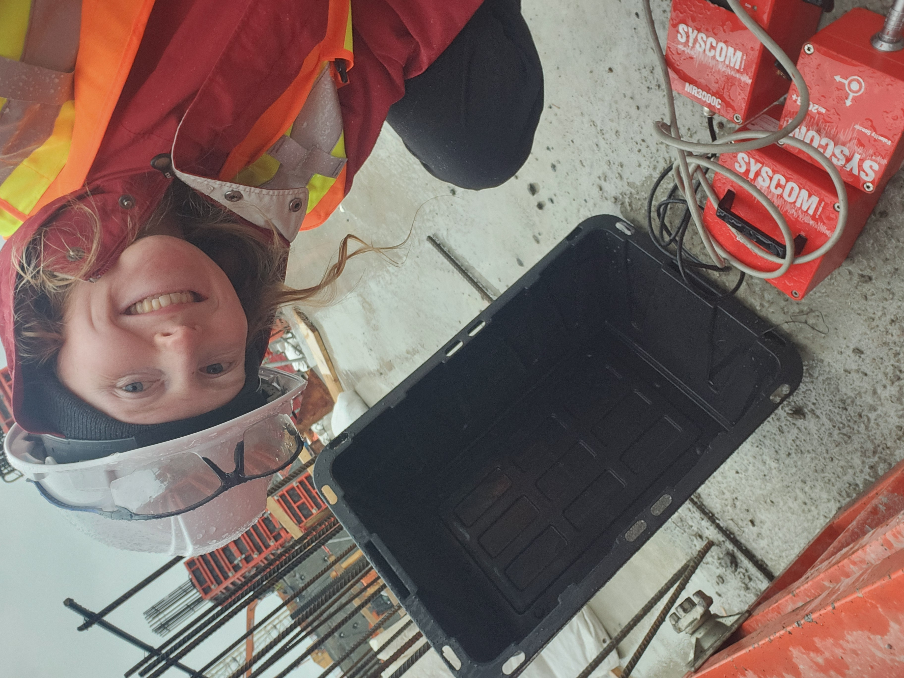

Biking
Mountain biking, big views, and the kind of terrain that rewards calm focus.
Interests
A separate space for photographs and videos from skiing, biking, camper living, travel, and the parts of life that keep engineering creativity alive.
Mountain biking, camper systems, skiing, and field work.
Mountain biking, big views, and the kind of terrain that rewards calm focus.

Hands-on solar work, compact systems, and practical problem solving outside the shop.

Acoustics and vibration work on site, where engineering data meets real conditions.
Snow, speed, and line choice. A different kind of systems thinking.
Kamloops auralization project. Headphones recommended.